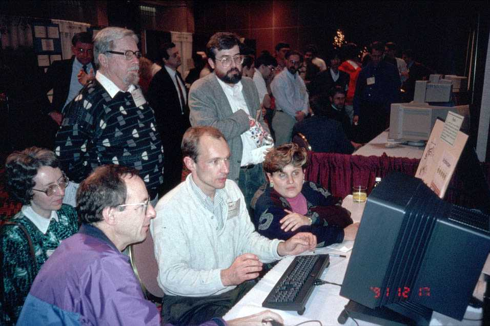

The lion (Panthera leo) is a large cat of the genus Panthera, native to Africa and India. It has a muscular, broad-chested body; a short, rounded head; round ears; and a dark, hairy tuft at the tip of its tail. It is sexually dimorphic; adult male lions are larger than females and have a prominent mane. It is a social species, forming groups called prides. A lion's pride consists of a few adult males, related females, and cubs. Groups of female lions usually hunt together, preying mostly on medium-sized and large ungulates. The lion is an apex and keystone predator; although some lions scavenge when opportunities occur and have been known to hunt humans, lions typically do not actively seek out and prey on humans.
Hardwork is key to success
lols
HTML
CSS
Tim Berners-Lee

Tim Berners-Lee Team
